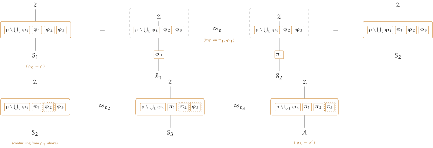

Theorem 4.20 replaces one subsystem. Replacing several at once is not a new argument but \(n\) applications of that one along a chain of hybrids; what needs care is the bookkeeping of the three classes down the chain.
The disjointness hypotheses below are meant literally, and are satisfiable only because of the convention of Chapter 1: the register is a machine of the execution and a member of no system, and there is only ever one of it. Counted a member, it would lie in every \(\varphi _i\) and every \(\pi _k\) at once, so no two subsystems of \(\rho \) would be disjoint and no two \(\pi _k\) would carry disjoint process ids; the hypotheses would be unsatisfiable for \(n \geq 2\) and would have to be read modulo \(\Corr \). Keeping the register out of the systems is what lets them be read as written.
Definition 4.22 (Simultaneous replacement). Let \(\rho \) be a system and let \(\varphi _1,\dots ,\varphi _n \subseteq \rho \) be pairwise disjoint subsystems. For systems \(\pi _1,\dots ,\pi _n\),
Write \(\rho _k := \rho [\pi _1/\varphi _1,\dots ,\pi _k/\varphi _k]\) for \(0 \leq k \leq n\), so that \(\rho _0 = \rho \) and \(\rho _n = \rho '\). Since the \(\varphi _i\) are pairwise disjoint, \(\varphi _k\) is untouched by the first \(k-1\) replacements, so \(\varphi _k \subseteq \rho _{k-1}\) and
Consecutive hybrids therefore differ by a single replacement, which lets Theorem 4.20 act on each step; the proof below walks the chain as \(n\) game hops, one per replacement. Fitting the steps together also needs the classes to be adjustable, and they are.
Lemma 4.23 (Monotonicity). Suppose \(\pi \) UC-emulates \(\varphi \) within \(\varepsilon \) against \((\Aset ,\SimSet ,\ZenvSet )\). Then it does so against \((\Aset ^{-},\SimSet ^{+},\ZenvSet ^{-})\) for any \(\Aset ^{-} \subseteq \Aset \), any class of simulators \(\SimSet ^{+} \supseteq \SimSet \) and any \(\ZenvSet ^{-} \subseteq \ZenvSet \).
Proof. Definition 4.11 is a \(\forall \exists \forall \) statement over the three classes. Narrowing the range of either universal quantifier and widening that of the existential one each preserve it, and \(\ZenvSet ^{-} \subseteq \ZenvSet \subseteq \ZenvSet _{\pi ,\varphi }\) keeps the result a legal statement of emulation. □
Informally, Theorem 4.24 says that replacing \(n\) pairwise disjoint subsystems at once costs the sum of the individual errors: it is Theorem 4.20 applied \(n\) times along a chain of hybrids, the adversaries being those of the last replacement, the simulators those of the first, and the environments admissible for every step at once.
Theorem 4.24 (Parallel composition). Let \(\rho \) be a system, let \(\varphi _1,\dots ,\varphi _n \subseteq \rho \) be pairwise disjoint, and let \(\pi _1,\dots ,\pi _n\) be systems such that the \(\pi _k\) carry pairwise disjoint process ids and, for each \(k\), \(\pi _k\) shares no process id with \(\rho \setminus \varphi _k\). Suppose that for each \(k\)
and write \(\ZenvSet _k'\) for the class Theorem 4.20 attaches to the \(k\)-th step,
Assume finally that
Then \(\ZenvSet ^{\star } \subseteq \ZenvSet _{\rho ',\rho }\), and
Proof. A hybrid argument over \(n\) steps, and the work is in checking that each step is a legal instance of Theorem 4.20 before any of them is taken. Three preliminaries do that. The first shows each replacement is well-formed and each \(\rho _k\) a system, by induction on \(k\), so that the composition theorem applies at every step. The second shows the class \(\ZenvSet ^{\star }\) is admissible for every intermediate pair at once, and — taking the union over \(k\) — for the outer pair too, so that the conclusion is itself a legal statement of emulation. The third builds the chain of simulators downwards, \(\Sim _{n+1} := \Adv \) and each \(\Sim _k\) supplied by the \(k\)-th step for the adversary \(\Sim _{k+1}\), which is what makes \(\Sim _1\) depend on \(\Adv \) alone. Only then is the hybrid taken: consecutive games differ in one replaced subsystem and one adversary, that difference is one application of Theorem 4.20, and summing the \(n\) hops telescopes to \(\sum _k \varepsilon _k\). First, each step is well-formed. The members of \(\rho _{k-1} \setminus \varphi _k\) are those of \(\rho \setminus \varphi _k\) the first \(k-1\) replacements leave in place, together with \(\pi _1,\dots ,\pi _{k-1}\); by hypothesis \(\pi _k\) shares a process id with neither group. So the replacement of \(\varphi _k\) by \(\pi _k\) in \(\rho _{k-1}\) is well-formed in the sense of Definition 4.2. Each \(\rho _k\) is a system, by induction on \(k\): \(\rho _0 = \rho \) is one, and \(\rho _k = \rho _{k-1}[\pi _k/\varphi _k]\) is one by Proposition 4.3 from that well-formed replacement. So Theorem 4.20 and Proposition 4.16, which ask \(\rho _{k-1}\) and \(\pi _k\) to be systems, apply to the \(k\)-th step.
Next, admissibility. Let \(\Zenv \in \ZenvSet ^{\star }\) and fix \(k\). From \(\ZenvSet ^{\star } \subseteq \ZenvSet _k' \subseteq \ZenvSet _{\rho _k,\rho _{k-1}}\) we get
so \(\Zenv \) is admissible for the \(k\)-th pair of hybrids and the advantage \(\advtg ^{\op {uc}}_{\rho _k,\rho _{k-1}}\) below is defined. Proposition 4.16, applied to the replacement of \(\varphi _k\) by \(\pi _k\) in \(\rho _{k-1}\), then places the absorbed environment in \(\ZenvSet _{\pi _k,\varphi _k}\): its parameter is \(\Zenv \)’s, which already contains the identities of \(\pi _k\) and of \(\varphi _k\), so the inner advantage \(\advtg ^{\op {uc}}_{\pi _k,\varphi _k}\) is defined too. Taking the union of the displayed containments over all \(k\),
and likewise \(\Zenv \) hosts at no identity of \(\bigcup _k \IDs (\rho _k) \supseteq \IDs (\rho ') \cup \IDs (\rho )\) — the hosting clause of each \(\ZenvSet _{\rho _k,\rho _{k-1}}\), at \(k = n\) and \(k = 1\) — so both clauses of Definition 4.10 give \(\ZenvSet ^{\star } \subseteq \ZenvSet _{\rho ',\rho }\) and the conclusion is itself a legal statement of emulation.
Fix \(\Adv \in \Aset _n\) and put \(\Sim _{n+1} := \Adv \). For \(k = n, n-1, \dots , 1\) let \(\Sim _k \in \SimSet _k\) be the simulator the \(k\)-th step supplies for the adversary \(\Sim _{k+1}\). This is legitimate at every index: at \(k = n\) because \(\Sim _{n+1} = \Adv \in \Aset _n\), and at \(k < n\) because \(\Sim _{k+1} \in \SimSet _{k+1} \subseteq \Aset _k\). The chain of simulators is built downwards, each from the one before it, and \(\Sim _1\) depends on \(\Adv \) alone.
Now fix \(\Zenv \in \ZenvSet ^{\star }\) and consider the \(n+1\) games
Here \(G_0\) is the execution of \(\rho \) under \(\Sim _1\) and \(G_n\) that of \(\rho '\) under \(\Adv \), so the sequence starts at \(\rho _0\) and ends at \(\rho _n\). Consecutive games differ in one replaced subsystem and in the machine playing the adversary, and that difference is exactly one application of Theorem 4.20: for \(1 \leq k \leq n\),
The equality is Definition 4.5 read backwards, since \(G_k\) and \(G_{k-1}\) are the two executions that the advantage \(\advtg ^{\op {uc}}_{\rho _k,\rho _{k-1}}\) compares. The first inequality is the reduction of Theorem 4.20, available because \(\Zenv \in \ZenvSet ^{\star } \subseteq \ZenvSet _k'\) by hypothesis, so Lemma 4.23 makes the \(k\)-th step a statement against \(\ZenvSet ^{\star }\). The second is the emulation of \(\varphi _k\) by \(\pi _k\), applied to the adversary \(\Sim _{k+1}\) and the absorbed environment.
Summing the \(n\) hops and telescoping,
As \(\Sim _1 \in \SimSet _1\) was chosen from \(\Adv \) alone and \(\Zenv \in \ZenvSet ^{\star }\) was arbitrary, this is the statement of the theorem. □
Diagrammatically, hop \(k\) is Theorem 4.20’s own square (the figure above its proof) with \(\varphi \mapsto \varphi _k\), \(\pi \mapsto \pi _k\), \(\Adv \mapsto \Sim _{k+1}\), \(\Sim \mapsto \Sim _k\), and the shell \(\rho \setminus \varphi \) widened to carry every untouched slot along for the ride. One picture, hop \(1\) drawn in full and hops \(2,3\) continuing compactly from where it ends, \(\rho _0 = \rho \) to \(\rho _3 = \rho '\):

Reading left to right: \(\rho _0\) (all \(\varphi \)’s) is absorbed — the true remainder of \(\rho \) and the untouched \(\varphi _2,\varphi _3\) folding into \(\Zenv \) along with it, leaving only \(\varphi _1\) exposed. Theorem 4.20’s hypothesis swaps it for \(\pi _1\) within \(\varepsilon _1\); handing the fold back out reassembles \(\rho _1\), \(\Sim \) advanced from \(\Sim _1\) to \(\Sim _2\) to match. Hops \(2\) and \(3\) are the identical square, only compressed to their flat ends — redrawing it twice more would repeat rather than add — with the dotted boxes marking, at each hop, exactly which slot is \(\varphi _k\) (about to flip) and \(\pi _k\) (just flipped). Summing the three hops and telescoping, as in the last lines of the proof above, turns three separate \(\varepsilon _k\)’s, none of which appear in the theorem’s own statement, into the one bound \(\rho \approx _{\varepsilon _1+\varepsilon _2+\varepsilon _3} \rho '\).
Corruption along the chain. Corruption behaves along the chain as it does at a single step. Within a game the register is one machine underneath \(\rho \setminus \varphi _k\), \(\pi _k\) and \(\varphi _k\) alike, keyed by party, so a hop cannot corrupt a party halfway; across games the registers are separate instances and carry nothing between hops. The environment corrupts the same parties at every hop, being the same machine placing the same calls under line 3; the slot does not have to, so the two machines that change per hop — the replaced subsystem and the slot occupant \(\Sim _k \to \Sim _{k+1}\) — need not corrupt the same parties; but the environment reads \(\Cs \) unmediated (Remark 3.1), so a \(\Sim _k\) corrupting differently is caught by the same \(\varepsilon _k\), and commensurateness is again a consequence rather than an assumption. The parties \(\rho _{k-1} \setminus \varphi _k\) serves are handled alike: their \(\opl {Mediate}\) hooks leave the absorbed environment for the slot, which is why the outward set of Definition 4.15 carries the ids \(A\) and \(C\). So the theorem claims only that no environment in \(\ZenvSet ^{\star }\) tells the corruption patterns apart by more than \(\sum _k \varepsilon _k\).
Remark 4.25 (The largest classes). The union of the hybrid closures has a closed form. Each \(\rho _k\) consists of the untouched part of \(\rho \) together with \(\pi _1,\dots ,\pi _k\), so
Suppose now that each \(\ZenvSet _k\) is the largest admissible class \(\ZenvSet _{\pi _k,\varphi _k}\). Proposition 4.16 then makes the second condition defining \(\ZenvSet _k'\) redundant, so \(\ZenvSet _k' = \ZenvSet _{\rho _k,\rho _{k-1}}\), and the largest permissible choice of \(\ZenvSet ^{\star }\) is
Parallel composition against the largest classes therefore delivers the largest class again, as the single-step theorem does.
The three classes behave as the chain suggests. The adversaries are those of the last replacement, the argument starting from an adversary against \(\rho _n = \rho '\); the simulators are those of the first, the chain ending by producing a simulator against \(\rho _0 = \rho \). Each intermediate class serves twice, as the simulators of one step and the adversaries of the next, which is what \(\SimSet _{k+1} \subseteq \Aset _k\) arranges. The environments must be admissible for every step at once, hence the intersection. The advantage is additive, as a hybrid argument over \(n\) steps always makes it.